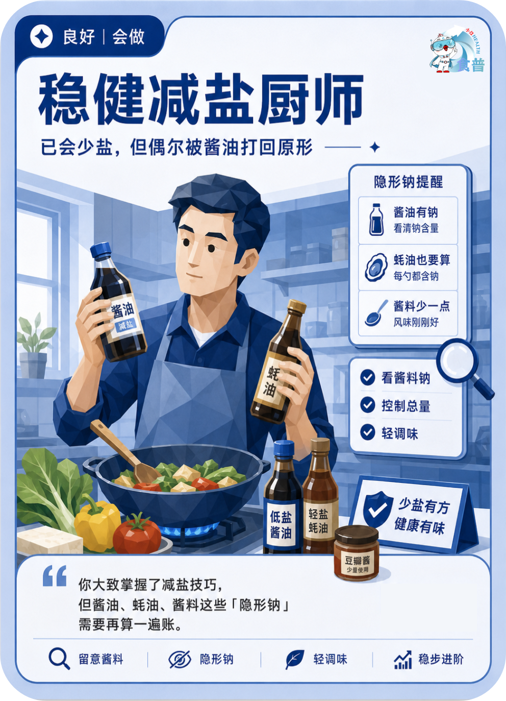

慢病管理人群
良好
会做
C08
稳健减盐厨师
已会少盐,但偶尔被酱油打回原形
你大致掌握了减盐技巧,但酱油、蚝油、酱料这些「隐形钠」需要再算一遍账。
手机端可点击“打开原图”后长按图片保存；也可以直接长按上方图卡保存。

已会少盐,但偶尔被酱油打回原形
你大致掌握了减盐技巧,但酱油、蚝油、酱料这些「隐形钠」需要再算一遍账。
手机端可点击“打开原图”后长按图片保存；也可以直接长按上方图卡保存。